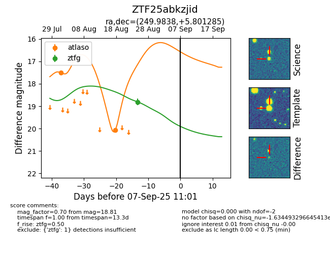

FINK: ZTF25abkzjid
Lasair: ZTF25abkzjid
ALeRCE: ZTF25abkzjid
ZTF25abkzjid (ztf,fink)
equatorial (ra, dec) = (249.9838,+5.80128)
galactic (l, b) = (22.3372,+31.78390)

last atlaso=20.06, ztfg=18.81
2 atlaso, 1 ztfg detections